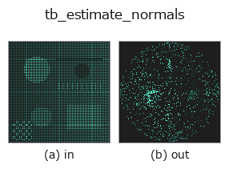

typed op• Data kinds: points → points
• Call: fullseye.apply(img, "tb_estimate_normals", a=0.5, b=0.5) (2-D model = एक image + दो scalar knobs a,b∈[0,1])

*Figure synthetic 128×128 input पर सच में चलाकर मिला output है। बाईं ओर input, दाईं ओर output। Point clouds ऊपर से देखे गए scatter के रूप में (brightness = z), 1-D series line के रूप में, volumes z दिशा में maximum-intensity projection के रूप में, videos बीच के frame के रूप में, complex images amplitude के रूप में, और जो return values चित्र नहीं बन सकते वे स्वयं values के रूप में दिखाए जाते हैं।*
Knob a को बदलकर (0.1 / 0.5 / 0.9, दूसरा knob default पर):
▸ tb_estimate_normals: knob a को बदलने का figure (docs site)
*Knob b output नहीं बदलता (मापा गया: 0.1 / 0.5 / 0.9 पर एक जैसा)।*
Stages (पहले आने वाले ops → यह op, बाएँ से क्रम में):
▸ tb_estimate_normals: stages का figure (docs site)
दूसरी images पर भी (synthetic scene / photo / coins। ऊपर की row में inputs, नीचे की row में उनके outputs। Knobs default पर):
▸ tb_estimate_normals: दूसरी images पर output (docs site)
बाहर की ओर (पड़ोस के centroid से दूर) एकरूप किए गए point cloud normals। → (N,3)।
प्रक्रिया (हर point पर, Python loop): cKDTree से खुद को मिलाकर k+1 neighbourhood (k को N-1 तक सीमित) लिया जाता है, और query point को origin मानकर neighbour coordinates की scatter matrix local.T @ local का सबसे छोटा eigenvector normal बनता है (unit length)। orientation का नियम है "neighbourhood centroid के साथ dot product positive हो तो उलट दें" = neighbourhood centroid से दूर वाली तरफ़ align करना।
• 5 से कम neighbours वाले points fixed value (0, 0, 1) लौटाते हैं (estimate नहीं किया जाता)।
• orientation एक local heuristic है: closed convex shapes में बाहर की ओर, पर open surfaces, पतली plates और गड्ढों में पड़ोसी points की orientation आपस में मेल न खाए, ऐसा हो सकता है (global consistency की गारंटी नहीं)। global रूप से align करने के लिए orient_normals से गुज़ारें या शुरू से estimate_oriented_normals इस्तेमाल करें। organized depth image हो तो normals_from_depth viewpoint की ओर orientation देता है और तेज़ है।
• return value float64 (N,3)। k का default 25। deterministic।
• अंदर यह principal_curvatures वाला ही computation चलाता है (normal estimation में भी quadric fit तक जाता है), इसलिए ज़्यादा points पर धीमा है।
2-D evolution registry में bridge किया गया 3d op estimate_normals। implementation वही है, केवल calling convention को op(v, a, b) के अनुसार ढाला गया है। a से k (default 25) बदला जाता है। b उपयोग नहीं होता।
• Sample data catalog (DL URL / license) — 2-D के लिए skimage.data (BSD/public) + synthetic, 3-D के लिए real data sources (Stanford/PDS आदि) के DL URL।
• Operators का स्रोत और संदर्भ — इस op family के मूल research/methods के स्रोत।
नीचे का program सच में चलता है, यह जाँचा गया है (figure वाला ही input)। Studio की help में यह block buttons बन जाता है, जिनसे इसे वहीं load करके चलाया जा सकता है।
img_to_points 0.50 0.50 tb_estimate_normals 0.50 0.50
▸ यह pipeline load करें · Load करके चलाएँ
नीचे के उदाहरण मूल ledger op estimate_normals को call करते हैं। यह bridge op वही implementation है, बस fn(v, a, b) convention के अनुसार ढाला गया है, इसलिए व्यवहार वैसा ही लागू होता है (केवल call का रूप अलग है)।
• cylinder_axis_metrology — py -3.11 examples_3d/cylinder_axis_metrology.py
• feature_register — py -3.11 examples_3d/feature_register.py
• oriented_normals — py -3.11 examples_3d/oriented_normals.py
points को input के रूप में लेते हैं)identity · tb_points_to_voxel · tb_estimate_point_normals · tb_iss_keypoints · tb_project_points · tb_render_point_depth · tb_statistical_outlier_removal · tb_radius_outlier_removal
typed)tb_points_to_voxel · tb_estimate_point_normals · tb_iss_keypoints · tb_project_points · tb_render_point_depth · tb_statistical_outlier_removal · tb_radius_outlier_removal · tb_voxel_grid_downsample
*Provenance: ops.py — 2D operator registry. यह per-op note tools/opdocs.py md से अपने-आप generate होता है (हाथ से edit न करें)।*
© 2026 Kazufumi Furuse — Fullseye operator documentation. Licensed under Apache-2.0.